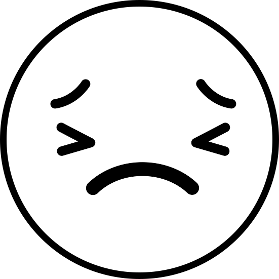
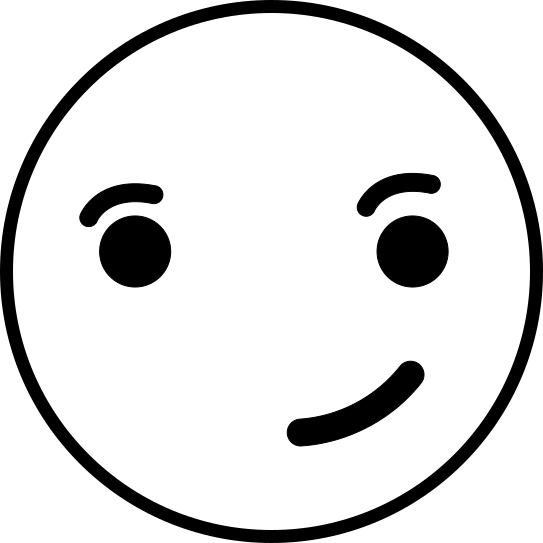
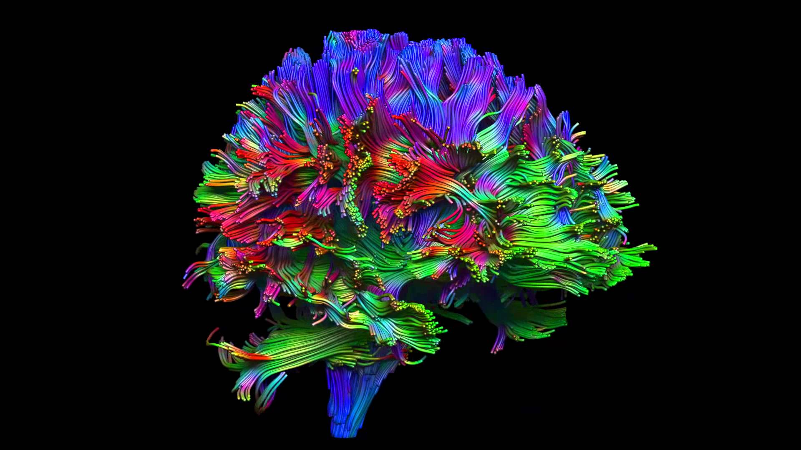
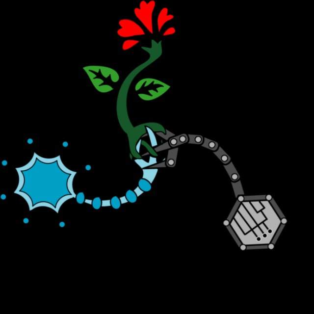

Calculando nuevos Neurocontroladores ...
Neurocontrolador:
Conforme con la solución
Salir

Fatigado / Activo

Enviar
Insatisfecho - Satisfecho
Aburrido - Emocionado
Enviar
Límite de neurocontroladores
Salir
Iniciando el experimento
¿ Deseas terminar el experimento ?
Sí
No

Tu contribución es importante para el avance de la ciencia
¡ Agradecemos tu participación !

Cerebral